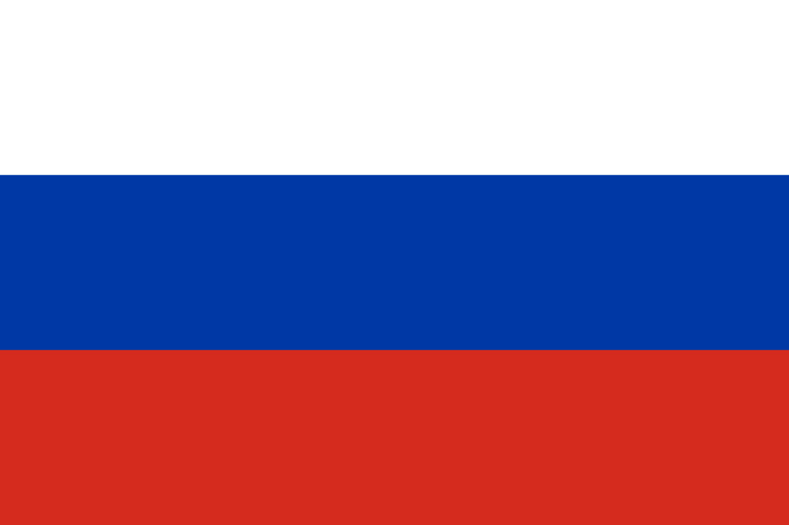

Russia (Russian: Россия, tr. Rossiya, pronounced [rɐˈsʲijə]), or the Russian Federation,[c] is a transcontinental country spanning Eastern Europe and Northern Asia. It is the largest country in the world by area, covering over 17,125,191 square kilometres (6,612,073 sq mi), and encompassing one-eighth of Earth's inhabitable landmass. Russia extends across eleven time zones and borders sixteen sovereign nations, the most of any country in the world.[d] It is the ninth-most populous country and the most populous country in Europe, with a population of 145.5 million. The country's capital and largest city, Moscow, is also the largest city entirely within Europe. Saint Petersburg is Russia's cultural centre and second-largest city. Other major urban areas include Novosibirsk, Yekaterinburg, Nizhny Novgorod and Kazan. The East Slavs emerged as a recognisable group in Europe between the 3rd and 8th centuries AD. The medieval state of Kievan Rus' arose in the 9th century. In 988, it adopted Orthodox Christianity from the Byzantine Empire. Rus' ultimately disintegrated, and among its principalities, the Grand Duchy of Moscow rose. By the early 18th century, Russia had vastly expanded through conquest, annexation, and exploration to evolve into the Russian Empire, the third-largest empire in history. Following the Russian Revolution, the Russian SFSR became the largest and the principal constituent of the Soviet Union, the world's first constitutionally socialist state. The Soviet Union played a decisive role in the Allied victory in World War II and emerged as a superpower and rival to the United States during the Cold War. The Soviet era saw some of the most significant technological achievements of the 20th century, including the world's first human-made satellite and the launching of the first human into space.
